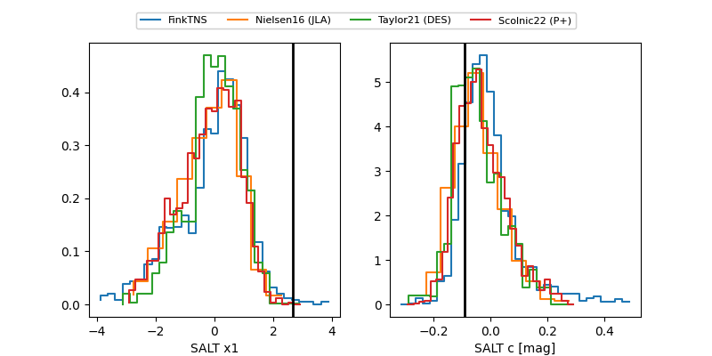

FINK: ZTF25abmjfcf
Lasair: ZTF25abmjfcf
ALeRCE: ZTF25abmjfcf
TNS: 2025whv
YSE: 2025whv
ZTF25abmjfcf (ztf,fink)
2025whv (tns,yse)
ATLAS25kui (atlas)
equatorial (ra, dec) = (350.1272,+12.24170)
galactic (l, b) = (90.7332,-44.87034)

last atlasc=18.42, atlaso=18.64, uvot::b=18.52, uvot::u=19.40, uvot::uvm2=21.23, uvot::uvw1=20.26, uvot::v=18.08, ztfg=18.80, ztfr=18.54
5 atlasc, 7 atlaso, 3 uvot::b, 3 uvot::u, 1 uvot::uvm2, 3 uvot::uvw1, 1 uvot::v, 11 ztfg, 9 ztfr detections